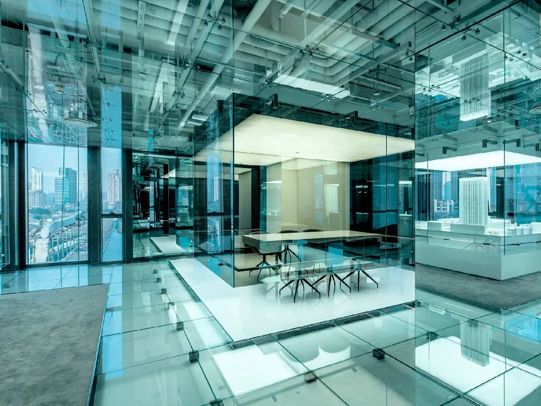
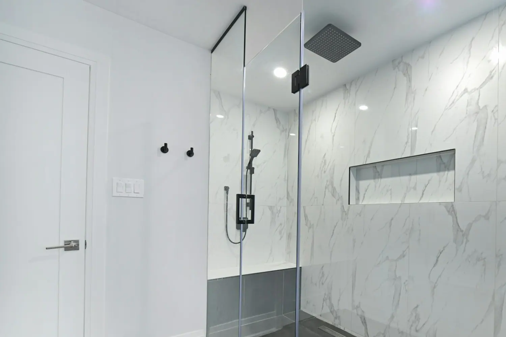
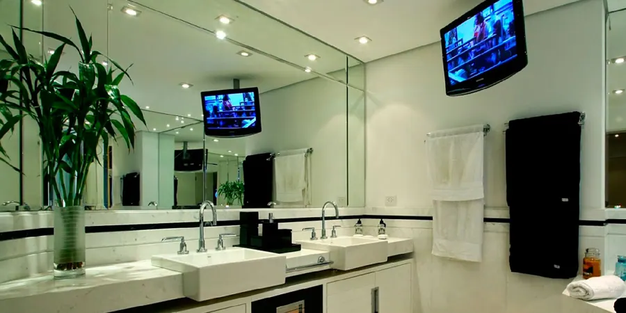
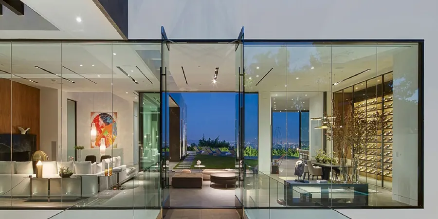

Box para banheiro
Do box convencional ao mais sofisticado, com vidro incolor, verde, bronze, fumê ou azul, e ferragens branca, bege, preta, bronze, prata, cromada e aço inox.
Box para banheiro, espelhos, portas e janelas de vidro temperado, coberturas de vidro laminado, fachada, fechamento, divisórias, envidraçamento de sacadas e cortina de vidro. Há mais de 14 anos no mercado de vidros e espelhos.

O que oferecemos
Conforme suas necessidades, executamos seu trabalho de maneira eficiente, com uma equipe qualificada. Garantia de qualidade total, do início ao final do trabalho.

Do box convencional ao mais sofisticado, com vidro incolor, verde, bronze, fumê ou azul, e ferragens branca, bege, preta, bronze, prata, cromada e aço inox.

Painéis de vidro que deslizam um a um sobre um trilho até a lateral da varanda ou porta, onde são recolhidos e imobilizados.

Bisotê, com LED, sob medida e decorativos, para sala de jantar, sala de estar e lavabo.
Envidraçamento de sacada, fachada de vidro temperado ou laminado, guarda-corpo, muro de vidro e cobertura.
Manutenção
Não é só instalação nova. Fazemos manutenção em peças já instaladas, inclusive de outras vidraçarias. Chame no WhatsApp descrevendo o problema.
Diferencial técnico
Isso aumenta a resistência e a segurança do vidro, porque ao se quebrar ele se fragmenta em pedaços bem menores em relação ao vidro temperado em forno vertical.
Contamos com equipe própria e especializada. Não terceirizamos mão de obra como muitas outras vidraçarias fazem, e com isso garantimos a qualidade tanto na execução quanto nos materiais fornecidos.
Muitos dos nossos produtos são produzidos e estocados para atender com os menores prazos possíveis em Campinas e região.
Marcas que fornecemos
Avaliações
Ao contrário de outras vidraçarias da região, a Única responde com rapidez e é fácil o agendamento. O profissional que fez o serviço em casa, o Alexandre, foi muito educado e prestativo. O serviço foi bem executado e o preço justo.
Rafael GerbasiA Única Vidraçaria nos atendeu prontamente, tem preço justo e a instalação rápida! São preocupados com a segurança e qualidade. Indicamos com certeza!
Nuria MauroNosso cliente a muito tempo, super indico.
Daniela Teodoro de Souza SannazzaroContato
Atendemos Campinas e mais 91 cidades de São Paulo e Minas Gerais, entre elas Jundiaí, Sorocaba, Santos, Guarulhos, Poços de Caldas e Extrema.